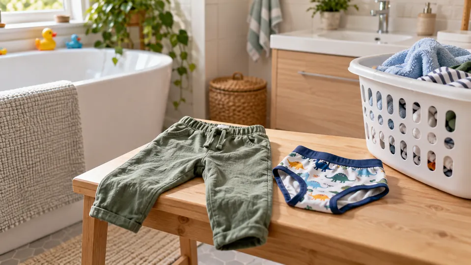

Potty Training
How should I respond to potty accidents?
Keep cleanup ordinary and protect your child’s dignity.

Quick Answer
Keep cleanup ordinary and protect your child’s dignity.
Make cleanup predictable
Keep spare clothes, wipes, and a laundry spot nearby. Say something neutral like “Your clothes are wet; let’s get comfortable.” Offer help without lectures. A child can assist with a manageable task, such as carrying clean clothes, but cleanup should never become a punishment or a public performance.
Notice patterns without tracking perfection
If it helps, privately note whether accidents happen during absorbing play, outings, or a change in routine. Offer a bathroom opportunity at a sensible transition rather than asking constantly. Check that clothing is easy to manage and that the bathroom feels accessible. Pause an approach that is creating fear or ongoing conflict.
Know when to ask for help
Pain, blood, constipation, new frequent accidents, or a sudden change after a period of dryness deserve a conversation with your child’s clinician. This blog cannot explain the cause. Ask about nighttime expectations separately; daytime progress does not mean nighttime dryness will happen on the same schedule.
Compare home and travel potty options
Your next little win
Choose one idea that fits today. Keep what helps, adjust what does not, and leave room for your family’s needs.
Open your planner · Share in the Parent ClubSources and resources
American Academy of Pediatrics / HealthyChildren.org · checked October 9, 2026.
Household examples are original editorial suggestions. General education; health content has not been independently reviewed by a clinician. Ask a qualified professional about individual health, development, or school concerns.
Optional tools for this task
These are ordinary manufacturer links; commission-paying affiliate links are not connected. Comparisons use manufacturer information, not hands-on testing. You can start with equipment you already have.